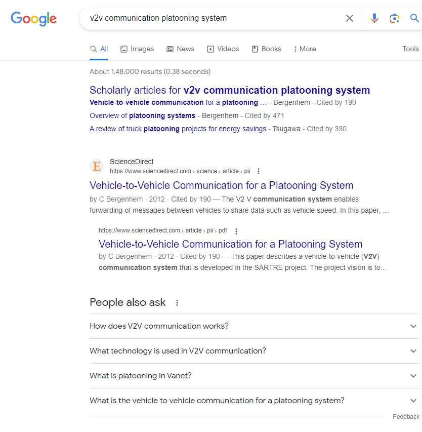
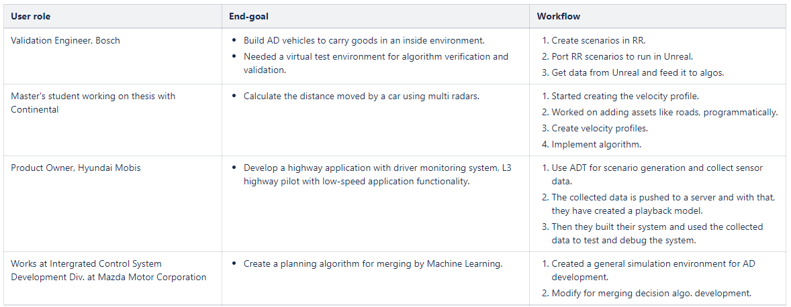

Context & Challenges
Context
MATLAB's Automated Driving Toolbox (ADT) provides algorithms and 6 Reference Apps for autonomous driving prototyping.
Key User Challenges
- Poor discoverability of apps and documentation.
- Lack of realistic, customizable examples.
- Difficult integration with other toolboxes.
My Role & Scope
Role
- Led an 8-week multi-method study to understand usage of ADT reference apps.
- Delivered strategic insights + tactical fixes that improved adoption and usability.
Collaborators
- CFEs (Customer Facing Engineers) for initial problem framing.
- An EDG Intern & Team Lead for analysis and synthesis.
- Developers & Doc Writers to validate themes and co-create recommendations.
Methods & Activities
1. CFE Interviews
Identified awareness and discoverability issues from Customer Facing Engineers.

2. Doc Visit Analysis
Revealed which apps/examples were under-visited by users.
| Applications | Total Visits | Ave Visits | Pages Done | Audited | Ave Quality Ratings | Ave Rating | |
|---|---|---|---|---|---|---|---|
| Automated Parking Systems | 21,774 | 4,955 | 55 | 4 | 3.8 | 22 | 4.2 |
| Collision Avoidance Assistance | 24,137 | 2,194 | 117 | 6 | 3.8 | 16 | 4.6 |
| Lane Following Systems | 22,154 | 923 | 242 | 120 | 4.3 | 7 | 3.6 |
| Lane Kicking Systems | 6,401 | 1,050 | 865 | 4 | 4.4 | 6 | 5.0 |
| Platooning Systems | 3 | 1 | — | — | — | — | — |
| Traffic Light Navigation at Intersections | 4,110 | 827 | 55 | 4 | 4.8 | 4 | 2.3 |
Values transcribed from the original research report. Please verify against source before publishing.
3. AdWords Keyword Analysis
Identified mismatch between search keywords and doc content.


4. Intercept Survey on Doc Pages
44,000 impressions, 127 responses that informed who our users are.
5. User Interviews
5 in-depth sessions with ADT business customers that led to user roles and goals identification.

6. Data Triangulation and Analysis
Validated insights and workflows, and identified issues.
Key Findings
Discoverability Issues
Most users found ref apps via CFEs, not search/docs. Google search rarely surfaced ADT pages.
Navigation Issues
The categorization and structure of the ref apps were found to be unintuitive with no guided entry points in the website.
Customization
Customization of apps was difficult, esp. for less experienced users. Several reports emerged about the integration with Radar/Lidar toolbox being poorly documented.
Apps Far from Reality
Users want more realistic, end-to-end examples. Several requests made for standardized scenario generation & metrics (for validation/regulation).
Impact
37%
Insights improved discoverability of the apps and supported higher adoption among users, increasing visits by 37%.
37%
Reference Apps became more useful, relevant, and realistic, increasing app rating by an average of 37%.
Support Load
Made reference apps more accessible → reducing user frustration, support load on CFEs, and customer support tickets.
Reflections & Learnings
Multi-Method Power
Multi-method research (analytics + SEO + qual interviews) revealed insights no single method could.
Early Stakeholder Engagement
Engaging stakeholders (Devs, Doc writers, CFEs) early built empathy & accelerated adoption of findings.
Connecting UX to Business
Strategic research showed I can connect UX to business goals (adoption, discoverability, retention).
Beyond Usability
Importance of thinking beyond Usability — tackling awareness, onboarding, documentation.